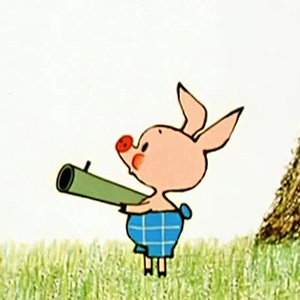

Винни-Пух ("Винни-Пух и все-все-все")
Винни-Пух(англ. Winnie-the-Pooh) — плюшевый мишка, персонаж двух повестей и двух сборников стихотворений английского писателя Алана Милна, впервые появившийся в печати в 1926 году.
Один из самых известных героев детской литературы XX века. В 1960—1970-е годы, благодаря пересказу Бориса Заходера, а затем фильмам студии «Союзмультфильм», где мишку озвучивал Евгений Леонов, Винни-Пух стал очень популярен и в СССР.

Пятачок ("Винни-Пух и все-все-все")
Пятачок (англ. Piglet; передача в переводе Б. В. Заходера, в других переводах также Поросёнок, Хрюка и др.) — персонаж книги А. Милна о Винни-Пухе (англ. Winnie-the-Pooh).
Пятачок — маленький поросёнок, самый близкий друг Винни-Пуха после Кристофера Робина. Он постоянно боится темноты и многих других вещей, и всегда очень тревожится по самым разным поводам. Но, несмотря на то, что он является Очень Маленьким Существом (англ. Very Small Animal), он зачастую побеждает свои страхи и совершает отважные поступки.
Волк ("Ну, погоди!")
Волк — редкий для советской мультипликации типаж стильного и сильного злодея. Основное занятие — охота за вечно ускользающим из лап Зайцем. Причём охота эта, судя по всему, исключительно из любви к искусству. Со стильностью не расстаётся даже тогда, когда благодаря собственной незадачливости («глупости» тут не скажешь — уж больно блистателен Волк) в очередной раз замыслив какую-нибудь пакость против Зайца, неизменно попадает впросак, оставшись в одних трусах (или лишенным всякого транспорта). Похож на заокеанского Тома, но не отличается садизмом, зато куда более наглый и брутальный (во многом благодаря озвучке Анатолия Папанова).
Надо ли говорить, что, вопреки своей «отрицательности», именно Волк снискал сочувствие и признание публики. Несмотря на грубость, способен проявлять цивилизованность, вежливость и какую никакую, а культуру. Волк не желает скорейшей смерти Зайцу, а скорее даже наоборот, часто выручает его из беды или собственной ловушки.
Заяц ("Ну, погоди!")
Заяц – очень добрый и отзывчивый, он всегда готов прийти Волку на помощь после того, как он в очередной раз попал в комическую ситуацию. Заяц приходит навестить Волка в больнице, помогает ему выбраться из клетки со львами, пытается защитить, переживает, когда Волк в очередной раз получает «на орехи». То есть можно сказать, что Заяц очень даже приятельски относится к своему охотнику. Особенно показательна сцена, когда Заяц начинает плакать над прогоревшей перчаткой, которая осталась от Волка, так как он думал, что тот погиб.
Колобок ("Колобок")
Колобок — персонаж одноимённой восточнославянской народной сказки, изображаемый в виде небольшого пшеничного хлеба шарообразной формы, который сбежал от испёкших его бабушки и дедушки, от разных зверей (зайца, волка и медведя), но был съеден лисой.